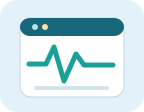
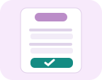

01
Encontre um serviço
Pesquise em uma lista de exemplos e descubra para onde ir.
Experimente palavras como “educação”, “carteira” ou “SUS”.
APRENDA NO SEU RITMO
Você sabe usar o celular, mas ainda tem dúvidas sobre serviços do governo? Aqui você aprende, passo a passo, a encontrar informações oficiais, consultar serviços e preencher formulários digitais.
POR QUE ISSO IMPORTA?
Nem sempre é fácil entender os nomes dos serviços, descobrir quais documentos são pedidos ou encontrar a informação certa. O objetivo deste site é transformar essas tarefas em passos mais claros.
É uma iniciativa educativa independente, voltada à comunidade escolar, que contribui para o ODS 10 — Redução das Desigualdades (abre em nova aba).
APRENDA PASSO A PASSO
Abra um tutorial, observe a ilustração e siga as orientações. Cada conteúdo inclui o caminho para o serviço oficial.
As imagens são ilustrações educativas, não capturas das páginas oficiais. O visual dos portais pode mudar.

SAÚDE · 4 MINO que é o Meu SUS DigitalConheça uma plataforma pública de informações em saúde.
HABILIDADE PRÁTICA · 5 MINComo preencher um formulário on-lineConheça os campos comuns e pratique usando informações inventadas.MÃO NA MASSA
Dois exercícios sem login e sem coleta de dados pessoais.
Pesquise em uma lista de exemplos e descubra para onde ir.
Experimente palavras como “educação”, “carteira” ou “SUS”.
Exemplo fictício de inscrição em uma oficina escolar.
PESQUISE COM AUTONOMIA
Use sempre os canais oficiais para consultar regras e prazos. Os links a seguir foram reunidos para apoiar os tutoriais e a pesquisa acadêmica.